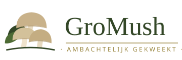
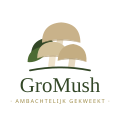
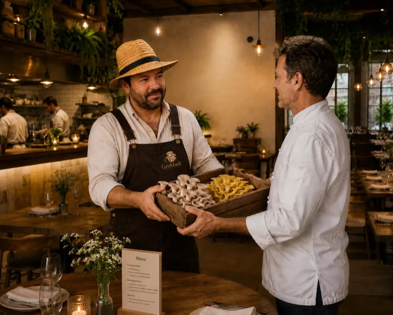
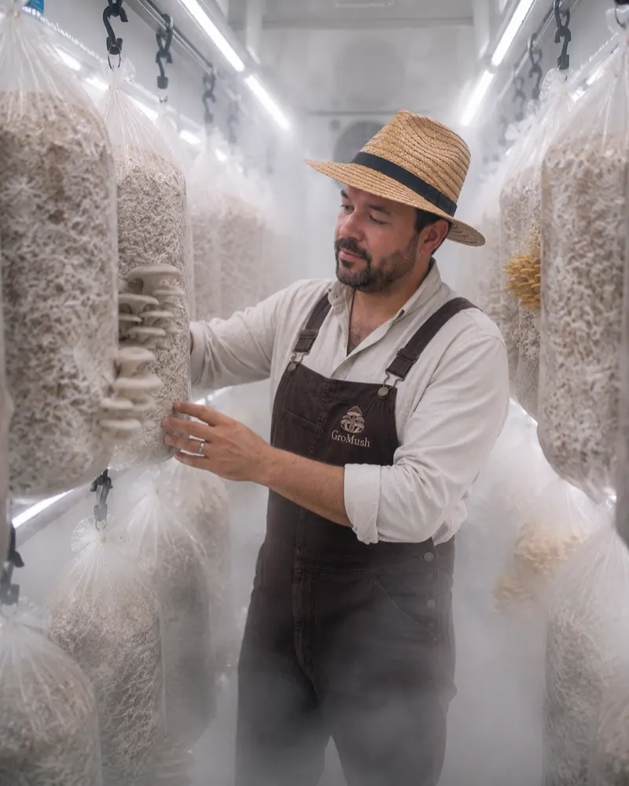
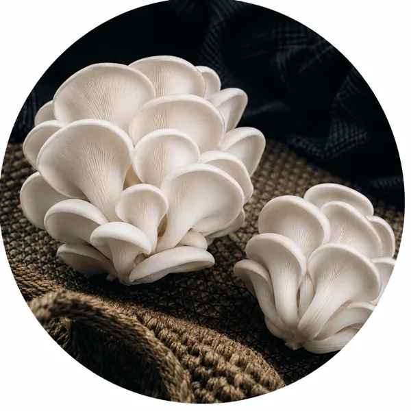
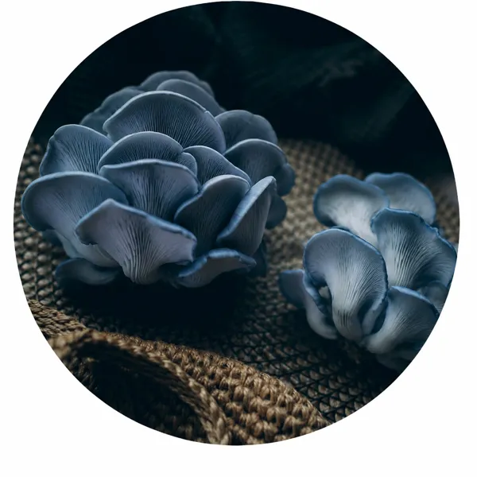
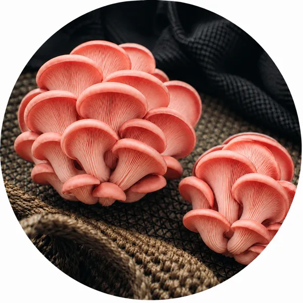
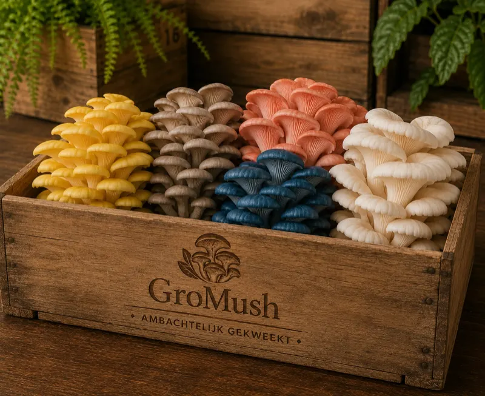

GroMush design system stijlgids & componenten
Alle bouwstenen van gromush.be op één plek: tokens, componenten en motion, telkens met een levend voorbeeld en kopieerbare HTML. De enige bron van waarheid voor stijlen is assets/css/main.css — deze pagina documenteert, ze definieert niets nieuws.
Uitgangspunten: dependency-vrij (geen frameworks, geen build-stap), GDPR-vriendelijk (fonts self-hosted, geen CDN’s of trackers) en WCAG AA als ondergrens voor contrast. Bedoeld als referentie bij verdere ontwikkeling en als checklist bij een latere CMS-migratie.
Logo
Vier SVG-varianten, allemaal in assets/img/. De kleuren in de bestanden zijn vast (groen #334727 met accenten) en worden nooit hertint.

logo.svg — horizontale lockup, voor lichte achtergronden (drukwerk, documenten, partners).

logo-badge.svg (witte cirkel, voor groen/foto’s) · logo-mark.svg (beeldmerk) · favicon.svg (afgeronde cream-tegel).
| Bestand | Vorm | Gebruik |
|---|---|---|
logo.svg | Horizontale lockup (360×120) | Lichte achtergronden; minimaal 180px breed zodat de woordmerktekst leesbaar blijft. |
logo-badge.svg | Beeldmerk in witte cirkel | Op groen of op foto’s. In header en footer staat de raster-variant gromush-logo-240.webp in een witte cirkel met schaduw. |
logo-mark.svg | Beeldmerk zonder tekst | Kleine formaten en decoratief gebruik, altijd op wit of cream. |
favicon.svg | Beeldmerk op cream-tegel | Browser-tab; PNG-fallbacks: favicon-48.png, apple-touch-icon.png. |
Wel doen
- Op donkere ondergrond altijd de badge (witte cirkel) gebruiken.
- Vrije ruimte rondom: minstens de hoogte van het beeldmerk-hoedje.
- Proporties behouden; schalen via
width/heightin dezelfde verhouding.
Niet doen
- Het logo hertinten, van een schaduw of outline voorzien.
- De lockup rechtstreeks op groen of op een foto zetten (te weinig contrast).
- Het woordmerk zelf zetten in Epilogue — het logo is een vaste vorm, geen tekst.
Kleuren
Het volledige palet als CSS-variabelen op :root. Cream is de hoofdachtergrond, groen de tweede achtergrond. Goud is voorbehouden voor grote titels; voor kleine goudkleurige tekst bestaat de donkerdere AA-variant --gold-deep.
Contrastratio’s (WCAG 2.1)
AA vraagt 4,5:1 voor normale tekst en 3:1 voor grote tekst (≥ 24px, of ≥ 18,5px vet). De twee combinaties die falen zijn bewust geen tekstcombinaties in dit systeem.
| Combinatie | Gebruik | Ratio | Oordeel |
|---|---|---|---|
| Ink op cream | Lopende tekst | 12,6:1 | AA + AAA |
| Green op cream | Koppen, knoptekst bij hover | 9,6:1 | AA + AAA |
| Gold op cream | Hoofdtitels | 3,3:1 | Enkel grote tekst |
| Gold-deep op cream | Kickers, links, kleine goudtekst | 5,4:1 | AA |
| Cream op green | Koppen op groen | 9,6:1 | AA + AAA |
| Cream-muted op green | Lopende tekst op groen | 7,9:1 | AA + AAA |
| Sand op green | Kickers, links en navigatie op groen | 5,5:1 | AA |
| Green op sand | Knoptekst | 5,5:1 | AA |
| Sand-soft op green | Hero-titels (met donkere overlay) | 7,4:1 | AA + AAA |
| Gold op green | — | 2,9:1 | Niet voor tekst — gebruik sand |
| Sand op cream | — | 1,7:1 | Enkel vlakken, nooit tekst |
Op groene vlakken zet de utility-klasse .on-green alles automatisch goed: koppen worden cream, lopende tekst cream-muted, kickers/links/accenten sand en de focus-ring sand. Goud wordt op groen dus nooit als tekstkleur gebruikt.
<div class="band on-green">
<span class="kicker">Kicker in sand</span>
<h2>Kop in cream</h2>
<p>Lopende tekst in cream-muted met een <a href="#">link in sand</a>.</p>
</div>Typografie
Epilogue (variabel font, 100–900) voor titels en lopende tekst; Old Standard TT (400, 700, 400 italic) voor serif-accenten. Beide self-hosted als woff2 in assets/fonts/ — geen Google Fonts CDN (GDPR). Lopende tekst staat in Epilogue Light (300), regelafstand 1.65.
Hoofdtitel in goud
Sectiekop in groen
Serif-subtitel in groen
Tussenkop
Inleidende paragraaf, net iets groter dan de lopende tekst.
Lopende tekst. De combinatie van een geometrische sans voor titels en een klassieke serif voor accenten geeft GroMush zijn ambachtelijke maar frisse karakter.
Meta-tekst: bijschriften, footer, kleine lettertjes.
Kicker boven een kop
Tweekleurige titel (.title-duo)
Het vaste titelpatroon van de site: eerste regel Epilogue-bold in goud, tweede regel Old Standard TT in groen. In “GroMush” krijgt “Mush” altijd een <strong>.
Welkom bij GroMush oesterzwam‑kwekerij
<h1 class="title-duo">
<span class="line-1">Welkom bij Gro<strong>Mush</strong></span>
<span class="line-2">oesterzwam‑kwekerij</span>
</h1>Tekst op groen (.on-green)
Hulpklassen: .title-gold, .title-green, .title-serif, .title-light, .lead, .kicker, .text-center, .accent (sand op groen) en .visually-hidden voor screenreader-tekst.
Knoppen
Eén basisklasse .btn (pill-vorm, Epilogue 600, schaduw rechtsonder) met drie contextvarianten. Bij hover en focus zoomt de knop subtiel uit (scale(0.96)) en wordt de schaduw korter; bij :active gaat hij naar scale(0.93). Probeer ze hieronder.

Bestel ChefBoxOp foto’s — .btn--photo: sand met groene tekst; bij hover cream met een sand-rand.
Op cream — .btn--cream: groen met sand-tekst; bij hover omgekeerd (sand met groene tekst).
Op groen — .btn--green: sand met groene tekst; bij hover cream met een sand-rand.
<a class="btn btn--photo" href="#">Bestel ChefBox</a> <!-- op foto's -->
<a class="btn btn--cream" href="#">Onze oesterzwammen</a> <!-- op cream -->
<a class="btn btn--green" href="#">Gratis Chefbox</a> <!-- op groen -->Bewuste afwijking van de briefing: de hover-tekstkleur is overal donkergroen gehouden. Goud- of zandkleurige tekst op cream haalt geen 4,5:1 (sand op cream is 1,7:1) en zou WCAG AA breken. De focus-stijl volgt de hover-stijl, plus de globale gouden focus-ring (:focus-visible).
Schaduwen
Alle schaduwen gebruiken #353535 (via --shadow-rgb), vallen buiten de vorm en wijzen naar rechtsonder. Nooit zwart, nooit gecentreerd, nooit inzet.
--shadow-photo14px 16px 32px −8px / 38%
--shadow-card10px 12px 26px −8px / 32%
--shadow-btn5px 6px 14px −2px / 35%
--shadow-btn-hover3px 4px 8px −2px / 30%
--shadow-rgb: 53, 53, 53;
--shadow-photo: 14px 16px 32px -8px rgba(var(--shadow-rgb), 0.38);
--shadow-card: 10px 12px 26px -8px rgba(var(--shadow-rgb), 0.32);
--shadow-btn: 5px 6px 14px -2px rgba(var(--shadow-rgb), 0.35);
--shadow-btn-hover: 3px 4px 8px -2px rgba(var(--shadow-rgb), 0.3);Layout & spacing
Vier bouwstenen dragen elke pagina: .container (max-breedte + zijmarge), .section (verticale ritmiek), .split (50/50 foto + tekst) en .band (donkergroen afgerond vlak). Verticale ruimte komt vrijwel altijd uit clamp()-waarden, niet uit vaste margins.
| Token / klasse | Waarde | Gebruik |
|---|---|---|
--container | 72rem | Maximale contentbreedte; .container = min(100% − 2.5rem, 72rem), gecentreerd. |
.section | padding-block clamp(3.5rem, 8vw, 6.5rem) | Standaard sectie-ademruimte. |
.section--tight | padding-block clamp(2.5rem, 5vw, 4rem) | Compactere sectie, bv. USP-rij of CTA. |
--radius | 1.25rem | Kaarten, foto’s, demo-vlakken. |
--radius-lg | 2rem | Grote vlakken zoals .band. |
--header-h | 7.75rem | Minimale hoogte van de site-header. |
Split (.split)
Vanaf 48rem twee gelijke kolommen; daaronder gestapeld. Met .split--text-first komt de tekst links en de foto rechts (de foto blijft in de HTML vóór of na de tekst staan, de volgorde wisselt visueel via order). Foto’s in .split__media krijgen automatisch ronde hoeken en de foto-schaduw.
Rechtstreeks van kwekerij tot keuken
Elke kweekcyclus volgen we van dichtbij op, van substraat tot oogst.
Ontdek onze oesterzwammen
<div class="container split split--text-first">
<div class="split__copy">
<span class="kicker">Onze kwekerij</span>
<h2>Rechtstreeks van kwekerij tot keuken</h2>
<p>…</p>
<a class="btn btn--cream" href="…">Ontdek onze oesterzwammen</a>
</div>
<div class="split__media" data-reveal="right">
<img src="../assets/img/….webp" alt="…" width="1122" height="1402" loading="lazy" decoding="async">
</div>
</div>Band (.band)
Donkergroen vlak met grote ronde hoeken, altijd samen met .on-green. Voor randloze varianten bestaat .band--full. Zie de chefbox-band voor de volledige invulling.
Wij leveren in regio Knokke‑Heist, Damme & Brugge
Restaurants, grootkeukens, hotels en particulieren kunnen rekenen op persoonlijke levering door de kweker zelf.
Bestel<div class="band on-green text-center">
<h2>Wij leveren in regio <span class="accent">Knokke‑Heist, Damme & Brugge</span></h2>
<p>…</p>
<a class="btn btn--green" href="…">Bestel</a>
</div>Hero (.hero)
Full-bleed foto met donkere overlay (55% #1a2112), gecentreerde serif-titel in sand-soft en een .btn--photo. De hero krijgt zijn fade-gedrag van main.js; daarom staat hier geen levend voorbeeld — zie /restaurant/. Gebruik maximaal één hero per pagina, altijd bovenaan.
<section class="hero">
<img class="hero__bg" src="../assets/img/….webp" alt="" width="1398" height="1125">
<div class="hero__inner">
<h1>Verse oesterzwammen voor uw restaurant</h1>
<p>…</p>
<a class="btn btn--photo" href="…">Gratis Chefbox</a>
</div>
</section>Kaarten
Profielkaarten (.profile-card)
De klant-keuze op de homepage. Staande foto (3:4) met een gradiënt-label onderaan; bij hover of focus vervaagt de foto en verschijnt het label groot en goud in het midden. Altijd in een .profile-grid van drie.
<div class="profile-grid">
<a class="profile-card" href="../restaurant/" data-reveal>
<img src="../assets/img/….webp" alt="…" width="1402" height="1122">
<span class="profile-card__label">Restaurant</span>
</a>
<!-- ×3 -->
</div>Infokaarten (.info-card)
Witte kaart met kaartschaduw, gecentreerde inhoud en optioneel een icoon-cirkel. De kop is serif in gold-deep. Altijd in een .card-grid (3 kolommen vanaf 48rem).
Dagvers geleverd
Geoogst op bestelling en rechtstreeks tot in uw keuken.
Lokaal gekweekt
Geteeld en geoogst in onze kwekerij in Knokke‑Heist.
Ambachtelijke teelt
Kleinschalig en met respect voor natuur en kwaliteit.
<div class="card-grid">
<div class="info-card">
<span class="usp__icon"><svg …></svg></span>
<h3>Dagvers geleverd</h3>
<p>Geoogst op bestelling en rechtstreeks tot in uw keuken.</p>
</div>
<!-- ×3 -->
</div>Soortencirkels (.species)
Ronde foto-tegels met kaartschaduw. Bij hover zoomt de foto licht in en verschijnt de naam op een donkere overlay; op touch-toestellen is het label altijd zichtbaar (onderaan met gradiënt). Op de soortenpagina staat elke cirkel in een figure.species-item met zichtbaar bijschrift. Zolang een foto ontbreekt, toont de placeholder-tegel het paddenstoel-icoon op groen.



<div class="species-grid">
<figure class="species-item" data-reveal>
<div class="species">
<img src="../assets/img/witte-oesterzwam.webp" alt="Witte oesterzwam" width="1254" height="1254">
<span class="species__name" aria-hidden="true">Witte oesterzwam</span>
</div>
<figcaption><span class="species-caption__name">Witte oesterzwam</span> Mild en zacht.</figcaption>
</figure>
<!-- placeholder zolang de foto ontbreekt -->
<figure class="species-item" data-reveal>
<div class="species species--placeholder" role="img" aria-label="Koning oesterzwam (foto volgt binnenkort)">
<svg … aria-hidden="true"></svg> <!-- paddenstoel-icoon -->
</div>
<figcaption><span class="species-caption__name">Koning oesterzwam</span> Vlezig en stevig.</figcaption>
</figure>
</div>Regiokaarten (.region)
Liggende foto (4:3) met serif-bijschrift in gold-deep, in een .region-grid van drie. Gebruikt voor de leverregio Knokke-Heist, Damme en Brugge.
<div class="region-grid">
<figure class="region" data-reveal>
<img src="../assets/img/knokke-heist-strand-panorama.webp" alt="…" width="1536" height="1024">
<figcaption>Knokke‑Heist</figcaption>
</figure>
<!-- ×3 -->
</div>Genummerde stappen
Een ol.steps nummert zichzelf via CSS-counters (“01”, “02”, …) in cream-tegels met kaartschaduw; de stappentekst is serif. Werkt op cream én in een groene band. Voor compacte opsommingen op groen bestaat daarnaast ol.numbered-list (nummer in cream, inline).
Plaats je bestelling via WhatsApp, telefoon of e‑mail.
Kies een van de beschikbare afhaal- of leverdagen.
Wij oogsten jouw bestelling vers op de dag zelf.
<ol class="steps">
<li class="step" data-reveal><p>Plaats je bestelling via WhatsApp, telefoon of e‑mail.</p></li>
<li class="step" data-reveal><p>Kies een van de beschikbare afhaal- of leverdagen.</p></li>
<li class="step" data-reveal><p>Wij oogsten jouw bestelling vers op de dag zelf.</p></li>
</ol>Wat mag u verwachten?
- Dagverse oogst, geplukt op bestelling.
- Persoonlijke levering door de kweker zelf.
- Een vast leverritme op maat van uw keuken.
<div class="band on-green">
<ol class="numbered-list">
<li>Dagverse oogst, geplukt op bestelling.</li>
<li>Persoonlijke levering door de kweker zelf.</li>
</ol>
</div>Accordeons
Native <details>/<summary> — geen JavaScript nodig, toetsenbord- en screenreader-vriendelijk out of the box. Het plusje draait 45° naar een kruisje wanneer het paneel opent.
Maak een afspraak
Kies een afhaaldag en tijdstip; wij oogsten je bestelling vers en zetten ze voor je klaar.
Prijzen en pakketten
Van een proefpakket over de chefbox tot een vast week- of maandritme. Prijzen op aanvraag.
Proefpakket
± 300 gr gemengde soorten
Chefbox
500 gr, vijf soorten
Vast ritme
Week- of maandlevering op maat
<details class="accordion">
<summary>Maak een afspraak</summary>
<div class="accordion__body">
<p>Kies een afhaaldag en tijdstip; wij oogsten je bestelling vers.</p>
</div>
</details>
<!-- prijstegels in een accordeon -->
<div class="pack-grid">
<div class="pack">
<h4>Chefbox</h4>
<p>500 gr, vijf soorten</p>
<p class="pack__meta">Gratis voor professionele keukens</p>
</div>
</div>Chefbox-band
Het signatuurblok van de site: een .band.on-green met links een .rule-list (inhoudslijst met sand-scheidingslijnen en paddenstoel-iconen) plus een .btn--green, en rechts een .figure-label — een foto met hoeklabel en witte icoon-stip.
Proef een gratis chefbox
- 100 gr Grijze oesterzwam
- 100 gr Gele oesterzwam
- 100 gr Roze oesterzwam

<div class="band on-green">
<h1>Proef een gratis <span class="accent">chefbox</span></h1>
<div class="split">
<div>
<ul class="rule-list">
<li>100 gr Grijze oesterzwam <svg …></svg></li>
<!-- … -->
</ul>
<a class="btn btn--green" href="…">Gratis Chefbox aanvragen</a>
</div>
<figure class="figure-label" data-reveal="right">
<img src="../assets/img/chefbox-….webp" alt="…" width="1388" height="1133">
<figcaption><span>Chefbox</span> <span class="dot"><svg …></svg></span></figcaption>
</figure>
</div>
</div>Iconografie
Alle iconen zijn inline SVG’s op currentColor — geen icon-font, geen externe sprites. Lijniconen op 2–2.6 stroke-width, ronde uiteinden. Decoratieve iconen krijgen altijd aria-hidden="true"; iconen die betekenis dragen (bv. de WhatsApp-knop) krijgen een aria-label op de link. De set hieronder is de volledige inventaris (namen zoals in _resources/build.py).
USP-rij (.usp-row)
Iconen in groene cirkels (7rem) met sand-lijnwerk, kop in gold-deep en een korte tekst. Bij hover zoomt de cirkel uit. Vanaf 40rem drie kolommen.
Lokaal gekweekt
Geteeld en geoogst in onze kwekerij in Knokke‑Heist.
Dagvers geleverd
Geoogst op bestelling en rechtstreeks tot in uw keuken.
Ambachtelijke teelt
Kleinschalig en met respect voor natuur en kwaliteit.
<div class="usp-row">
<div class="usp" data-reveal>
<span class="usp__icon"><svg … aria-hidden="true"></svg></span>
<h3>Lokaal gekweekt</h3>
<p>Geteeld en geoogst in onze kwekerij in Knokke‑Heist.</p>
</div>
<!-- ×3 -->
</div>Motion
Alle beweging zit achter prefers-reduced-motion: no-preference; wie minder beweging vraagt, krijgt alles direct zichtbaar en zonder animatie. Er zijn vier patronen:
- Hero-fade — hero-tekst vervaagt in bij het laden (getrapte delays van 0.18s) en vervaagt uit bij het scrollen (opacity + lichte parallax via
main.js). - Scroll-reveals — elementen met
data-revealfaden omhoog zodra ze in beeld komen;data-reveal="left"endata-reveal="right"schuiven zijdelings in. Eénmalig per element (IntersectionObserver, drempel 18%). - Zoom-out hovers — knoppen, iconen en kaarten schalen bij hover licht náár de gebruiker toe kleiner (
scale(0.9–0.98)), nooit groter. - Accordeon-plus — het plusje draait 45° bij openen.
data-reveal="left"
Schuift van links in.
data-reveal
Fadet omhoog.
data-reveal="right"
Schuift van rechts in.
<div class="split__media" data-reveal="right">…</div> <!-- foto schuift van rechts in -->
<div class="usp" data-reveal>…</div> <!-- blok fadet omhoog -->Timing: reveals 0.7s ease, hovers 0.2–0.35s ease, hero-in 0.9s ease. Voeg geen nieuwe animatiepatronen toe zonder ze hier te documenteren, en zet ze altijd achter dezelfde media query.